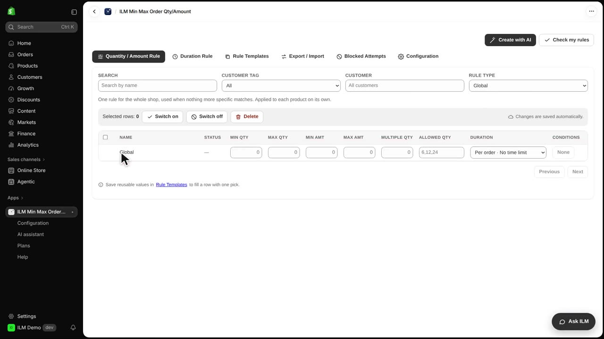
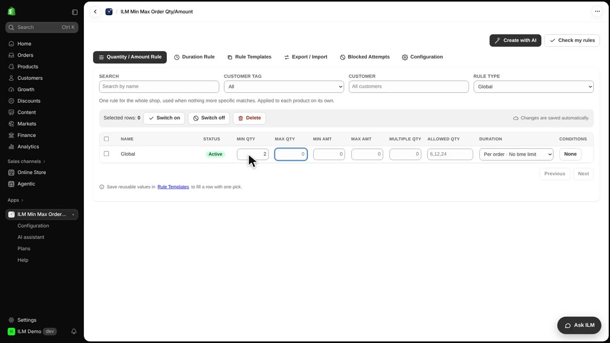
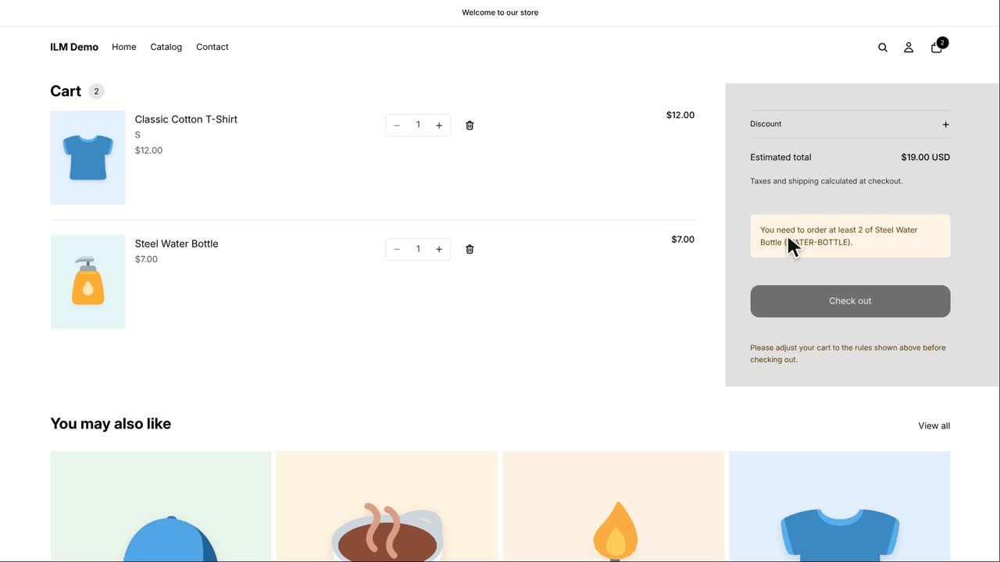

The Global rule type lets you set one minimum order quantity for your entire store, covering every product that does not have its own rule. It is perfect when you want a simple store-wide policy, like requiring at least two items per order. In this example, we set a global minimum of two, then test it with a Steel Water Bottle and a Classic Cotton T-Shirt.
First, change the Rule Type to Global. You will see just one row appear, representing the whole store.

Now type two in the Min Qty field for the Global rule. This means every product without its own rule must be ordered in a quantity of at least two.

We add one Steel Water Bottle to the cart, and the store refuses it. Because the bottle has no rule of its own, the global rule applies, and one is below the minimum of two. The shopper sees a notice explaining the minimum requirement.

The Classic Cotton T-Shirt has its own product rule with a minimum of one, so that product rule wins over the global rule. One T-shirt is allowed, showing that product-specific rules take priority.